Токио · Тораномон · отель
The Okura Tokyo: знаменитое лобби вернулось в новый отель
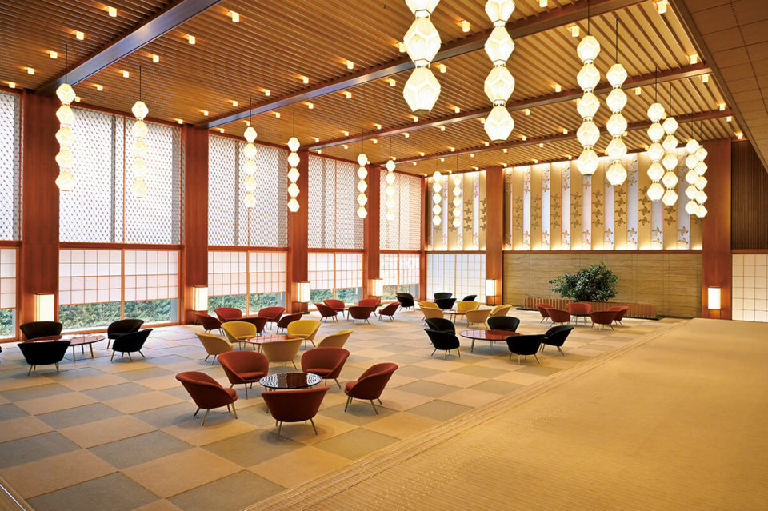
Когда старый корпус Hotel Okura Tokyo решили снести, за этим следила вся Япония, а поклонники просили сохранить его тёплое лобби. В 2019 году отель открылся под именем The Okura Tokyo, и восстановленное лобби оказалось почти неотличимо от прежнего.
История
Лобби, которое сберегли
За перестройкой главного корпуса Hotel Okura Tokyo следила вся Япония. Поклонники отеля, а их было много, просили об одном: оставить тёплое традиционное лобби. Когда после открытия гости увидели восстановленный зал, восторгу не было предела: повторили его так точно, что разницу почти невозможно найти.
Главный корпус Hotel Okura Tokyo, одного из самых известных отелей Японии, открылся в 1962 году, незадолго до первой Олимпиады в Токио 1964 года. В 2019 году, в первый год новой японской эпохи Рэйва, он сменил имя на The Okura Tokyo и 12 сентября снова принял гостей. Повторное открытие опять пришлось на подготовку к Олимпийским и Паралимпийским играм в Токио.
«Перестраивать отель решили ещё до того, как Токио выбрали столицей Олимпиады. Это правда совпадение»
руководитель пресс-службы отеля
Совпадение, конечно, удивительное. А может быть, и закономерное.
Номера
Два корпуса, два характера
Новый отель состоит из двух зданий: 17-этажного крыла Okura Heritage Wing на 140 номеров и 41-этажной башни Okura Prestige Tower на 368 номеров.
Okura Heritage считается самой роскошной маркой группы Okura и служит своего рода гостевым домом Японии для почётных гостей. Здесь берегут японскую культуру, историю и старые узоры, а пространство задумано тихим и уединённым.
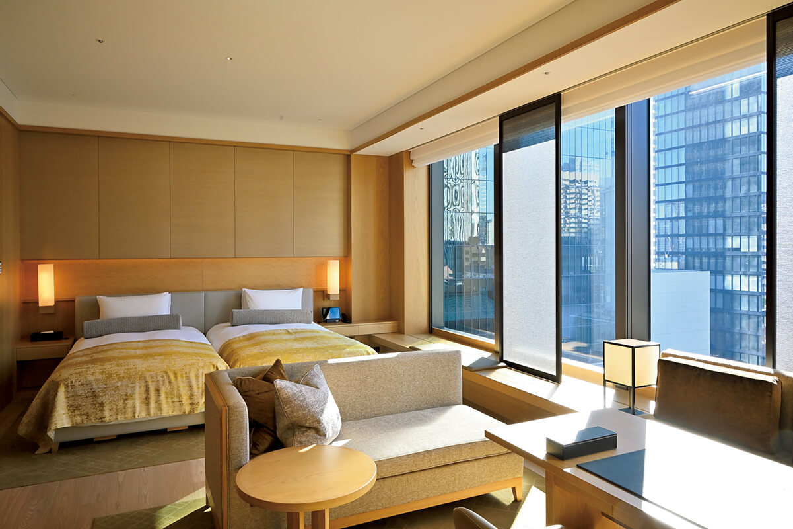
Okura Prestige задумана иначе: это современная роскошь. Отели этой марки к тому времени уже работали в Тайбэе и Бангкоке. В Токио к городскому лоску и дорогим материалам добавили японские акценты. С 28-го по 33-й этаж башни расположены номера Prestige, с 34-го по 36-й номера Prestige на верхних этажах, а с 37-го по 40-й клубные номера с доступом в клубный лаунж в течение всего дня. Есть и номера для гостей с ограниченными возможностями.
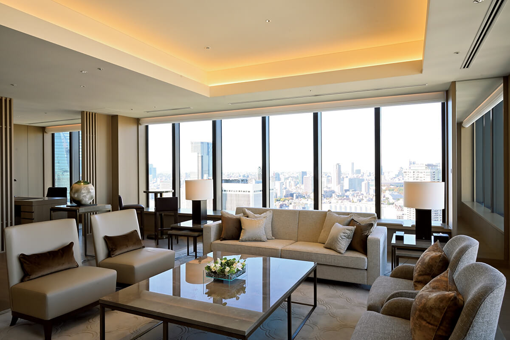
Из 140 номеров крыла Heritage семь люксов, из 368 номеров башни десять. Самый большой, «Империал-сюит» в башне, занимает 730 квадратных метров: здесь принимают членов правительств разных стран и королевских семей.
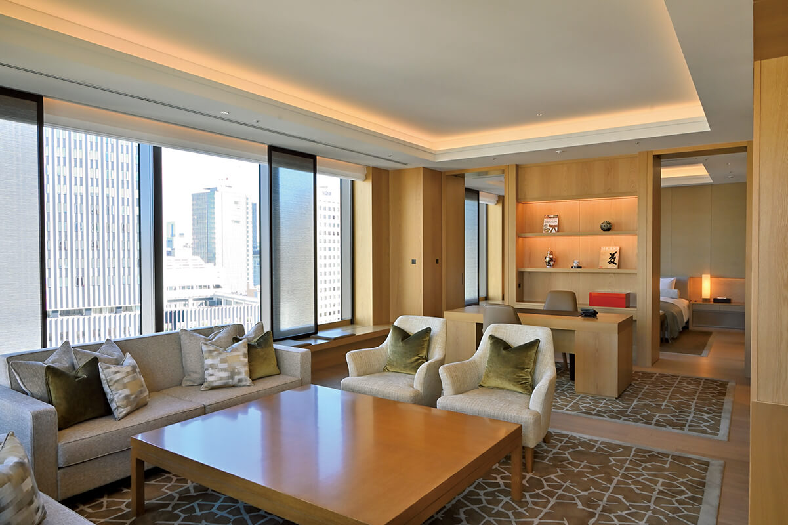
Генеральный управляющий отеля объясняет, с чего начинали:
«С самого начала было ясно, что можно менять, что менять не нужно и чего менять нельзя. Материалы было трудно найти, строителям тоже пришлось нелегко, но лобби и банкетные залы мы воссоздали так, чтобы впечатление осталось прежним. Если присмотреться, многое изменилось и там, где этого не видно. А заметнее всего изменились номера и рестораны»
генеральный управляющий отеля
По его словам, редкие художественные детали, которые уже невозможно повторить, сохранили по всему отелю: например, старые настенные панно из керамической плитки использовали заново.
Рестораны
Старые адреса на новый лад
Главной идеей повторного открытия стали «традиции и обновление». Она видна и в семи ресторанах и барах отеля: и в интерьерах, и в кухне, где основу не трогали, но смотрят вперёд.
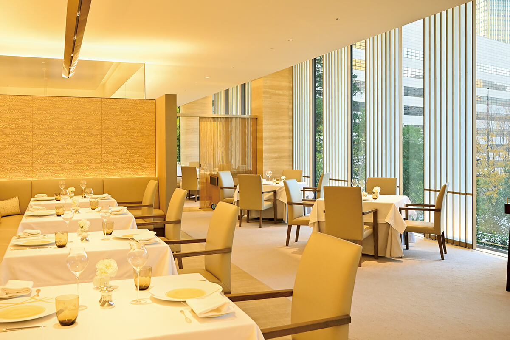
Сильнее всего изменился французский ресторан Nouvelle Epoque, в том числе интерьер. Шеф-повар взял в работу японские продукты и ферментированные продукты и говорит, что ищет искусство на стыке здоровой еды и высокой кухни. За долгую историю у каждого ресторана и бара отеля появились свои верные гости, которые ходят сюда, словно в собственное заведение.
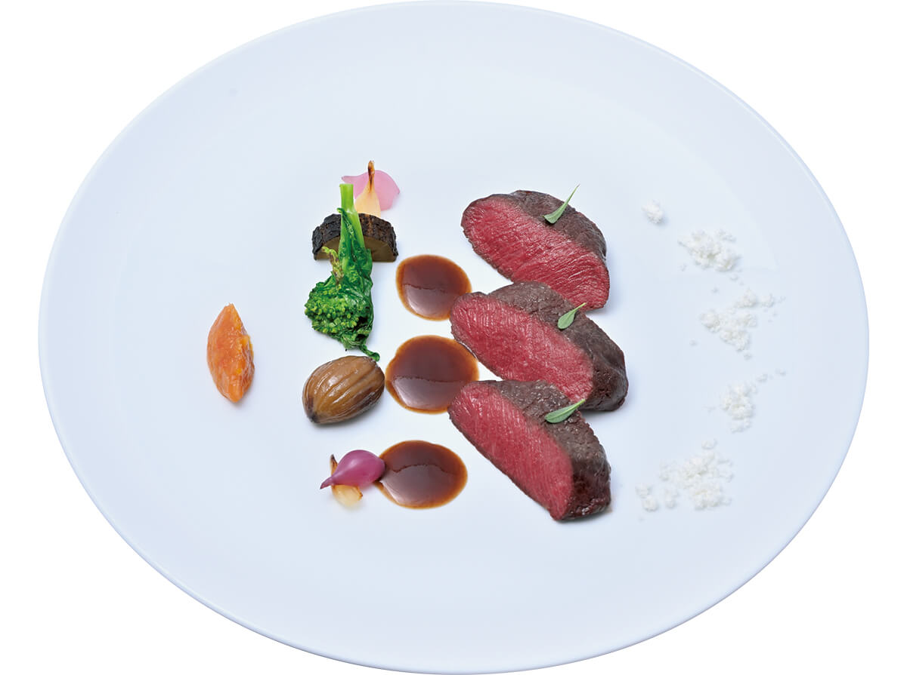
В популярный ресторан Sazanka с кухней тэппанъяки ходят гости, которые ждали открытия отеля, и попасть в него в 2020 году было непросто. Здесь щедро используют дорогие японские продукты, а приправы и соусы делают тонкими: это тэппанъяки высокого класса. Гости с удовольствием разговаривают с поваром через стойку и уходят довольными.
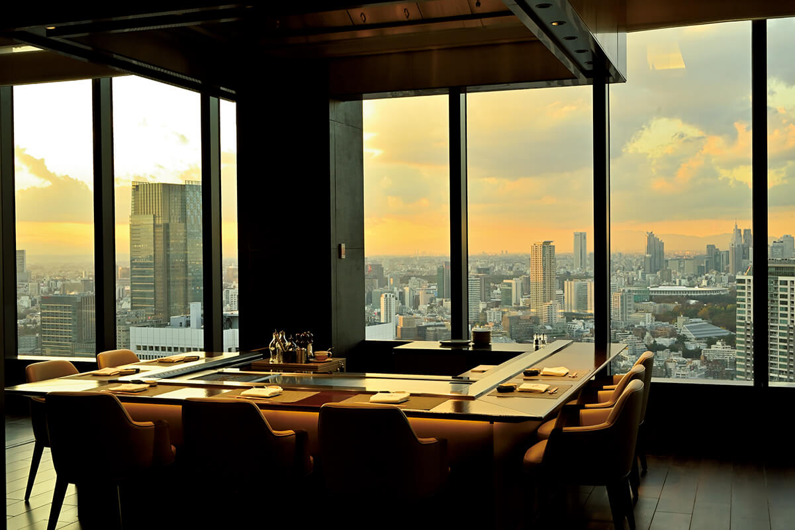
Если взглянуть на отель целиком, видно, что традиции и умение заботиться о госте, которые Okura копила десятилетиями, остались его основой.
«Гостеприимство должно быть выше, чем где бы то ни было, пусть хоть на волосок. В этом душа Okura»
генеральный управляющий отеля
Отель по-прежнему хочет рассказывать миру о японской культуре, и прежний дух Okura в нём жив.
Отдых
Клубный лаунж и спа
В отеле есть всё, что ждут от гостиницы мирового класса: клубный лаунж, спортзал, бассейн и спа.
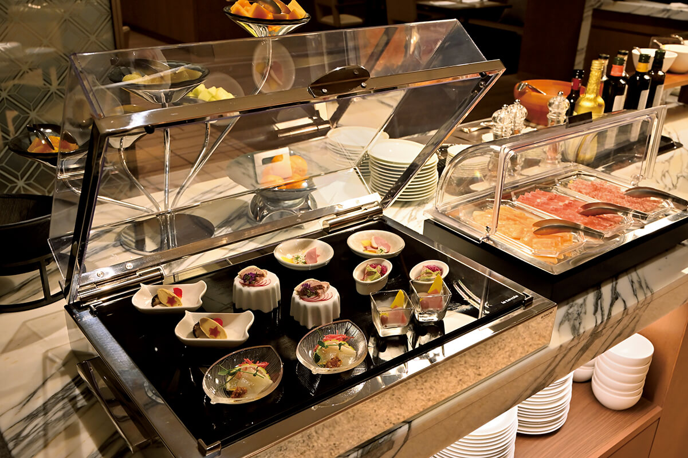
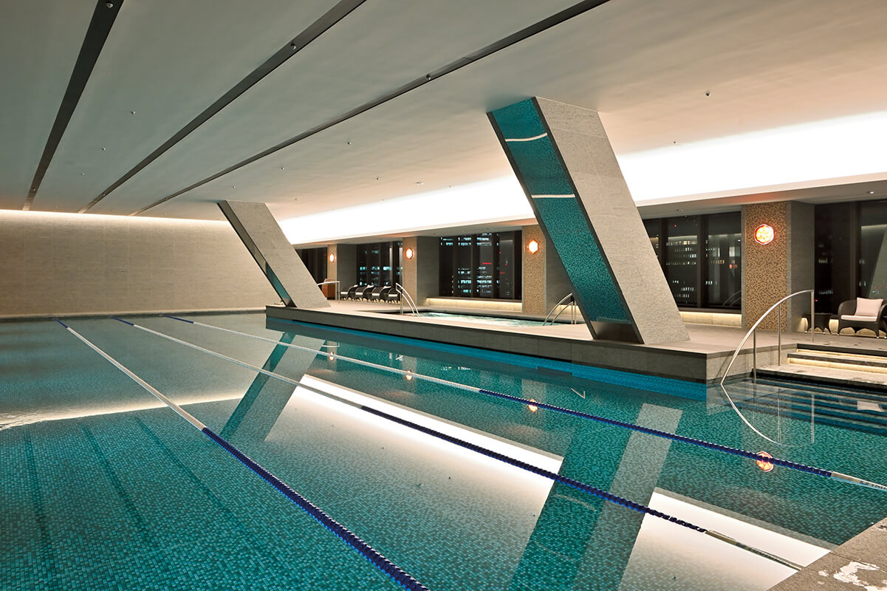
Детали
Что узнают поклонники Okura
Поклонникам старого отеля стоит поискать знакомые детали. Фонари Okura собраны из шариков с гранями, как у резного стекла кирико, а золотая нить на их поверхности меняет вид фонаря днём и вечером. На стенах повторяется узор из четырёхлепесткового цветка. Его придумал Кэнкити Томимото (1886–1963), мастер керамики, которого в Японии признали живым национальным сокровищем.
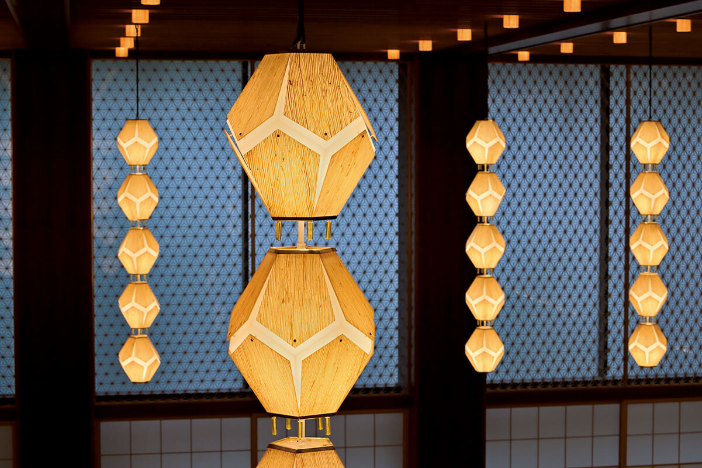
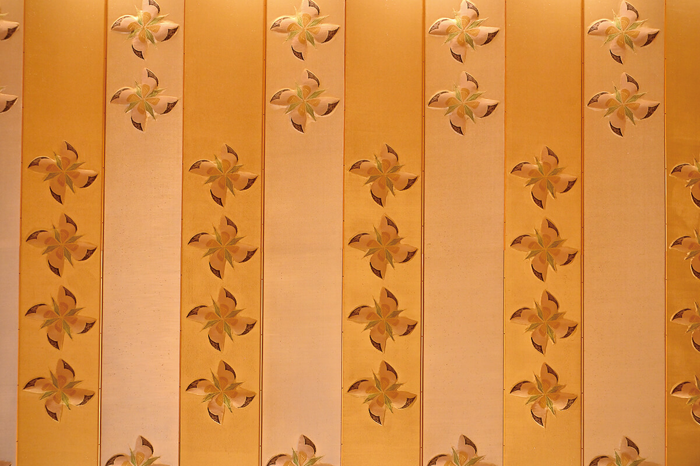
The Okura Tokyo
- Адрес
- Токио, Минато, Тораномон, 2-10-4
- Телефон
- +81 3-3582-0111
- Номера
- 140 в крыле Okura Heritage Wing и 368 в башне Okura Prestige Tower
- Цены / Вход
- номер Okura Heritage от 110 000 иен, Okura Prestige от 77 000 иен (без налога, с сервисным сбором, 2020 год)
- Заезд / выезд
- 15:00 / 12:00
- Как добраться
- 6 минут пешком от станции Камиятё (Tokyo Metro); на машине около 5 минут от съезда Касумигасэки столичной скоростной дороги
- Сайт
- theokuratokyo.jp
Фото: Мидзумаса Вакахара.